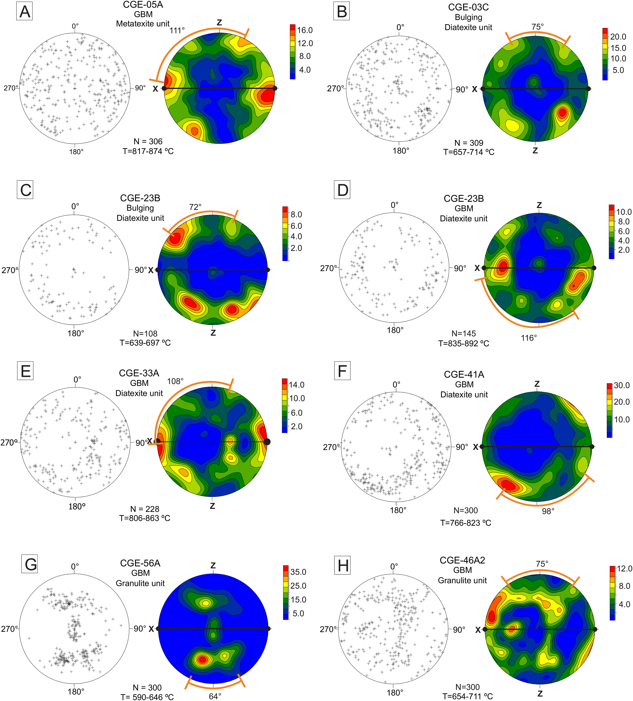

The role of deformation-assisted by water influx on a partial melting of a granite protolith, and its role in the evolution of southwestern São Francisco Craton margin, Brazil

Resumo em Português
A Unidade Areado Granito-Migmatito faz parte do embasamento do Orógeno Brasília Meridional na margem sudoeste do Cráton São Francisco, aflorando entre as regiões de Alfenas e Areado, no estado de Minas Gerais, Brasil. Esta unidade é composta por meta-sienogranito com granada, metatexito com hornblenda-granada e diatexito estromatítico com diferentes graus de fusão parcial. Este estudo caracteriza o meta-sienogranito com granada, seus equivalentes migmatíticos e investiga os diferentes padrões de deformação e fusão parcial envolvidos na produção dos migmatitos observados na unidade.A conexão entre o meta-sienogranito com granada, o metatexito com hornblenda-granada e o diatexito com biotita é inferida a partir de observações de campo e da assembleia de minerais acessórios. Petrografia associada a análise modal, dados estruturais, análise de eixo-c de quartzo, datação U-Pb em zircão (LA-MC-ICP-MS e SHRIMP) e análises de elementos traço em quartzo e titanita foram utilizadas para determinar a evolução metamórfica, de fusão parcial e de deformação. O meta-sienogranito com granada tem idade de cristalização de 2069,8 ± 5 Ma. Interceptos inferiores em zircão indicam idade de metamorfismo e fusão parcial entre 671 ± 58 e 657 ± 40 Ma. Idades de cristalização do fundido são inferidas entre 622 ± 7 Ma e 604 ± 6 Ma. Diferentes taxas de fusão parcial são estruturalmente conectadas, sendo mais elevadas na base da unidade, e estão relacionadas a quantidades contrastantes de influxo de água e deformação. O termômetro de eixo-c de quartzo forneceu temperaturas de deformação de 765–935 °C e outros pulsos ocorreram entre 590 e 715 °C, ambos entre 11 e 15 kbar. Esses valores coincidem com os dados do termobarômetro Zr-em-titanita. Os dados indicam que o protólito foi gerado em um estágio magmático tardio Riaciano do Cinturão Mineiro e passou por um evento deformacional-metamórfico Neoproterozoico de alta temperatura.